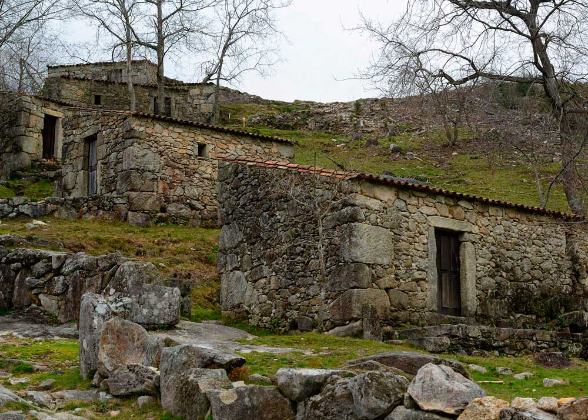
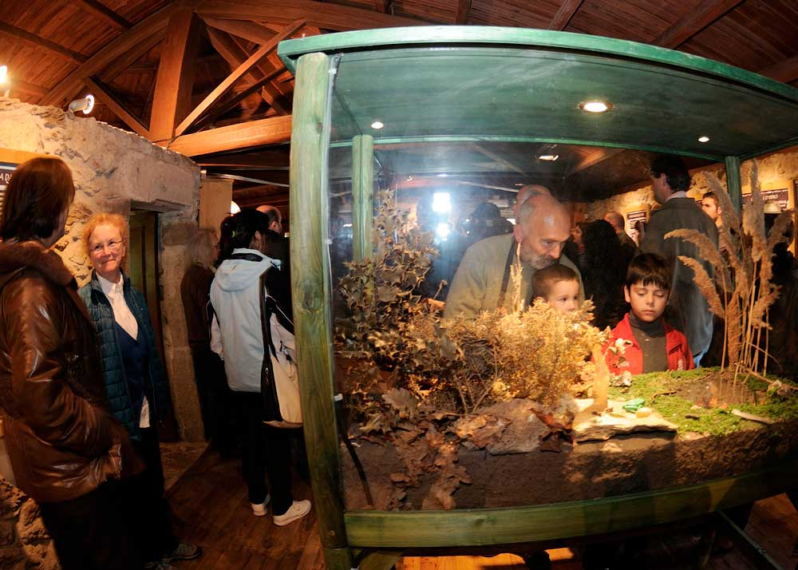
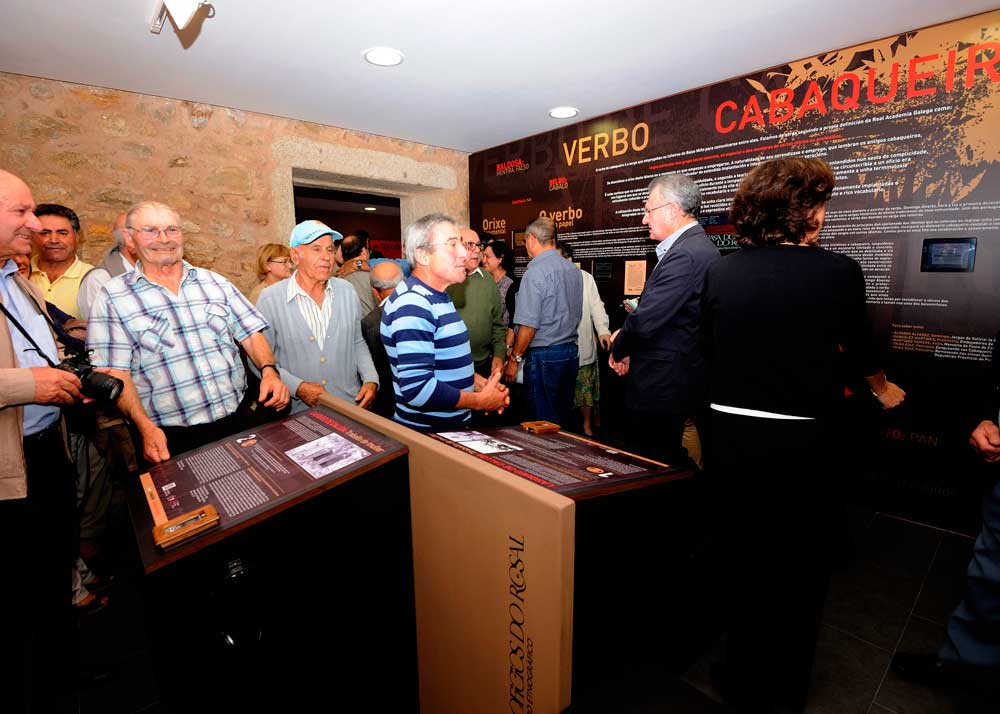
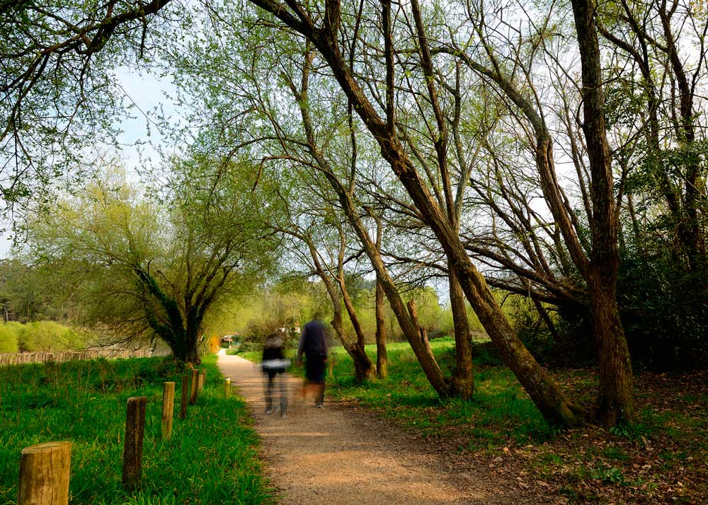
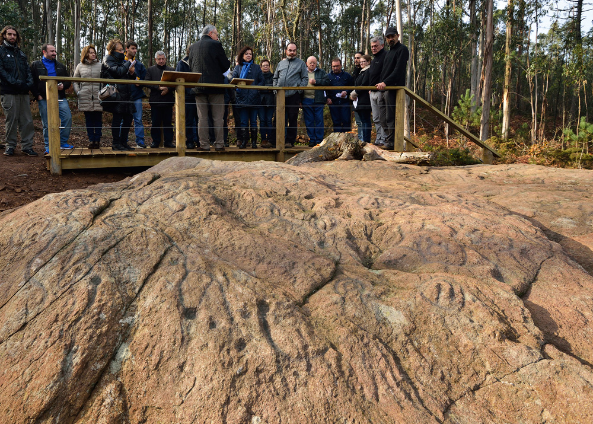

agoce.wordpress.com
O Rosal
|
|
||||||||

|  |
Molinos del Folón y del PicónCategoría: Patrimonio arquitectónico y etnográfico Localización: 41.96190207, -8.840902221 El conjunto histórico-etnográfico de los Molinos de Folón y de Picón esta formado por 67 molinos de agua en perfectas condiciones, dispuestos en hilera en un enclave natural inigualable. Fueron declarados Bien de Interés Cultural en el año 1998, y en la actualidad existe un sendero de pequeño recorrido reconocido por la Federación Gallega de Montañismo (PR-G-94) |
|  |
Aula de la naturaleza de las AceñasCategoría: Patrimonio natural. Patrimonio arquitectónico y etnográfico Localización: 41.92263028, -8.82560603 El Aula de la Naturaleza del Molino de las Aceñas se encuentra en un antiguo molino de agua con vivienda de finales del siglo XIX, restaurado para servir de centro de interpretación de la zona. A orillas del Rio Tamuxe, está rodeado por un área recreativa de gran belleza en el curso bajo del citado rio. Se trata de un enclave único para aquellos que busquen un espacio natural al aire libre para el descanso, el esparcimiento, pasear, andar en bicicleta o pasar el día en familia. |
|  |
Centro Etnográfico «Os Cabaqueiros»Categoría: Patrimonio arquitectónico y etnográfico Localización: 41.936995, -8.83628 El Centro Etnográfico «OS Cabaqueiros» se sitúa en las inmediaciones de la Plaza del Calvario, en el centro de la localidad de O Rosal. En el podemos encontrar una exposición permanente en recuerdo de los tejeros rosalinos (cabaqueiros), considerados los herederos de los ceramistas romanos que ocuparon la comarca. Ofrece un recorrido histórico a través de un oficio ancestral practicado por muchas personas dentro y fuera de Galicia. |
|  |
Sendero de Pescadores PR-G-112Categoría: Patrimonio natural Localización: 41.92325201, -8.786015578 Constituye un sendero natural de 7,2 km que recorre la ribera del rio Miño y su afluente el Tamuxe. Comienza en la parroquia de Eiras y avanza hasta la desembocadura del Rio Tamuxe. El recorrido destaca por su patrimonio natural, su vegetación y sus paisajes. El sendero está homologado por la Federación Gallega de Montañismo como de baja dificultad: PR-G112 |
|  |
Yacimiento Arqueológico y petroglifos de GhorghaladoCategoría: Patrimonio arqueológico Localización: 41.9312, -8.7918 El petroglifo de Ghorghalado es una muestra única del arte rupestre galaico. Tienen una antiguedad de entre 3000 y 4500 años. Destaca por su gran tamaño, por la profusión de motivos grabados y por la singularidad del soporte empleado, roca de tipo metamórfica del complejo Monteferro – O Rosal. |